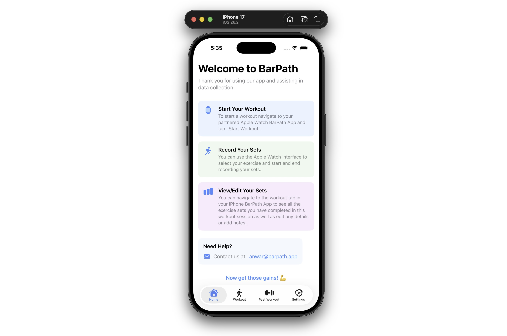

01
BarPath App
A machine pipeline for tracking barbell movement during weightlifting, classifying exercise types, counting reps. Trains models to detect and trace bar paths from IMU data, using modern data infrastructure with Airtable integration for dataset management and iterative model refinement.
